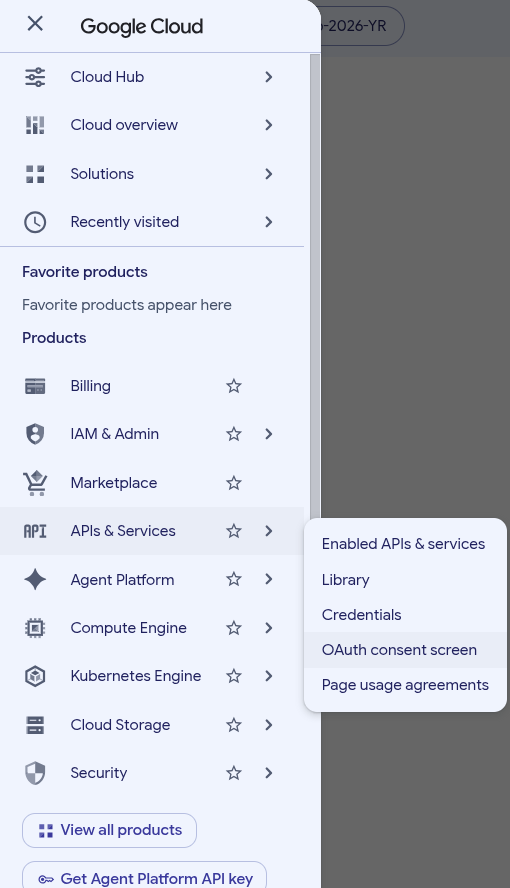
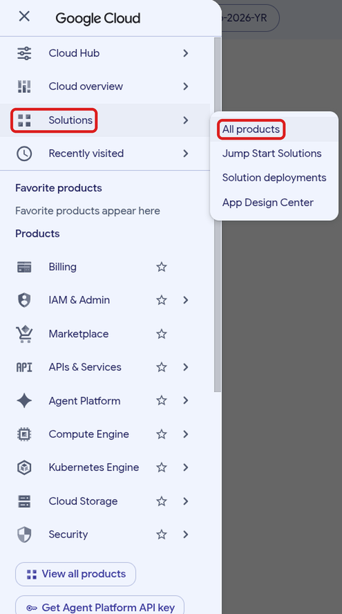

Classes 10–12 (D): Sign in with Google
Part of the task-app setup for Classes 10–12. Work through the parts in order, doing every step yourself; Start here has the worksheet, the screenshot log, how to ask Claude when you’re stuck, and the list of all parts.
Time: about 15–25 minutes.
As of Oct 22, 2026 · Official docs: Google: OAuth 2.0 · Google Cloud: Manage OAuth clients · Supabase: Login with Google
“Sign in with Google” works through OAuth, a standard way for one website to let you sign in with your account at another (here, Google) without ever seeing your password. Google and Supabase use the word in many of the labels below (“OAuth client”, “Callback URL (for OAuth)”). If it’s new, read OAuth: “Log in with Google” first; it takes two minutes.
Follow Step 6: setup authentication (Google OAuth), with these corrections, since Google’s screens have changed:
At console.cloud.google.com, create a project with the same name as your Supabase project (for example
task-app-2026-maria). Click the project button at the top (next to “Google Cloud”), then New project. A yellow box may tell you how many more projects you can create; ignore it. Under the name, Google shows a Project ID; if it adds numbers to it, that’s fine. Leave Parent resource as No organization and click Create. Google takes you back to the page you were on, still in your old project (if you had one). To switch, click the bell icon (Notifications) at the top right and, under “Create Project: …”, click Select Project. Check that the project button now shows your new project’s name. Write the name in the worksheet.Screenshots: creating the project and switching to itThe New Project form After Create: still in the old project; the bell shows Select Project The worksheet so far: the Google rowsThe instructor’s worksheet after this step, with the email blurred. The Client ID and secret come in Step D5.
The Google rows of the worksheet’s My Info sheet Open Google Auth Platform, the part of Google Cloud that handles “Sign in with Google”. There are three ways to get there. Try the menu once: it’s how you learn where things are.
Click ☰ at the top left. Point at APIs & Services and, in the list that opens next to it, click OAuth consent screen. That’s the old name of the page; it opens Google Auth Platform.
Click ☰, point at Solutions and click All products. Google Auth Platform is in the first category, Management.
In the search box at the top, type
Google Auth Platformand click the result with that name (“OAuth configuration and credentials”). Not Identity Platform: that’s a different product.A new project shows “Google Auth Platform not configured yet”.
Getting around Google CloudGoogle Cloud has hundreds of products, so its website (the console) has more menus than Supabase’s. The parts you use:
- The project button, next to “Google Cloud” at the top left, shows which project you’re in. Everything you see and change belongs to that project. Check it whenever a page looks wrong.
- ☰ opens the main menu. A row with > opens a second list when you point at it; move the mouse straight across to that list. Recently visited lists the pages you opened last. The ☆ next to a product adds it to Favorite products at the top of the menu.
- The search box finds products, pages and documentation by name.
- The bell (Notifications) lists what Google finished doing for you, such as creating a project.
- Inside a product, a menu on the left lists its pages, and the line above the page title (for example “Google Auth Platform / Overview”) shows where you are.
The console opens on the page and project you used last, so it may look different each time you come back.
Screenshots: three ways to Google Auth Platform
APIs & Services > OAuth consent screen">☰ > APIs & Services > OAuth consent screen 
Solutions > All products">☰ > Solutions > All products All products: Google Auth Platform is under Management Searching for Google Auth Platform Google Auth Platform in a new project Click Get started. The form Project configuration has four parts, which you fill in one after the other with Next. Don’t click Create at the bottom until all four are done.
- App Information: App name
Task App 2026 -followed by your first name and last initial, for exampleTask App 2026 - Maria L. Google may show it to people who sign in. User support email: open the list and choose your Google address. - Audience: choose External. Internal is only for companies and schools whose Google accounts belong to an organization.
- Contact Information: enter your email address. Google uses these addresses only to tell you about changes to your project. To enter more than one, type a space after each address: it turns into a separate box. (These are not the people who may sign in to the app. You list those in the next step.)
- Finish: tick I agree to the Google API Services: User Data Policy and click Continue.
Then click Create.
- App Information: App name
Create the OAuth client, the entry that lets your app use “Sign in with Google”. Open the form Create OAuth client ID in one of two ways:
Right after the last step you’re on the Overview page. It says “You haven’t configured any OAuth clients for this project yet.” Click Create OAuth client next to it.
In the menu on the left, click Clients, then + Create client at the top of the page.
Fill in the form:
- Application type: choose Web application.
- Name: replace
Web client 1withtask-app-2026-followed by your first name and last initial, andweb client, for exampletask-app-2026-maria-l web client. Only you (and your instructor, if you share the project) see this name, in the console, but a name that says whose client it is and what it’s for helps once there are several. - Authorized JavaScript origins: click + Add URI and type
http://localhost:3000. - Authorized redirect URIs: click + Add URI and paste your Google callback URL from the worksheet (
https://YOUR-PROJECT-REF.supabase.co/auth/v1/callback). - Leave Use this client for an AI-powered agent unticked.
Then click Create.
Screenshots: creating the OAuth clientThe Overview page after the last step The Clients page The application types The form for a web application, before filling it in Save the Client ID and secret. After Create, a window OAuth client created shows your Client ID and Client secret. Read its yellow box: once you close this window, you can never see or download the secret again. Before you click OK:
- First, take a screenshot of the window and paste it into your screenshot log. If anything goes wrong later, it’s your only copy of what the window showed.
- Then copy the Client ID and the Client secret into the worksheet. Use the copy icon next to each one; don’t retype them. In many fonts
l(small L) andI(capital i), or0(zero) andO, look the same, and one wrong character makes sign-in fail. - Click Download JSON. Your browser saves a file whose name starts with
client_secret_in your Downloads folder. Move it to yourfull-stack-demo-appfolder, next to the worksheet (not insidetask-app). It holds the secret too, so it’s a backup copy of everything in this window.
Then click OK. The blue box in the window, “OAuth access is restricted to the test users …”, is the next step.
Screenshot: the OAuth client created windowThe window after Create. In this picture the ID and secret are blurred. The worksheet so far: the Google rowsThe instructor’s worksheet after this step, with the email, Client ID and secret blurred. Yours shows your real values.
The Google rows of the worksheet’s My Info sheet, all four filled in Add the test users. In the menu on the left, click Audience. The page shows:
- Publishing status: Testing. While the app is in testing, only the people on its list of test users can sign in with Google. (The Publish app button is greyed out until the Branding page is complete; this course doesn’t need it.)
- User type: External, as you chose in Step D3.
- OAuth user cap: at most 100 test users, counted over the app’s whole life (removing someone doesn’t free their place).
- Test users, with + Add users and the list, empty for now.
Click + Add users. A panel opens on the right, with the same warning about the 100-user cap, one box, and a counter (0 / 100). Type the Google address you’ll sign in to the app with, plus any other Google account you’ll test with. Type a space after each address: it turns into a separate box, and the counter goes up. Check each address before you save: a typo means that account can’t sign in. Then click Save. The addresses appear under Test users (in small letters; that doesn’t matter, because email addresses don’t care about capitals).
Screenshots: Audience and Add usersThe Audience page of a new app, before adding test users The Add users panel Forget this step and Google blocks the sign-inAnyone who isn’t on the list gets an error from Google, and the app never hears from them. If a classmate or your instructor should try your app, add their Google address here first.
Turn on Google in Supabase. Go back to your Supabase project (see “Getting back to your Supabase project” in Step C2). In the icon menu, click Authentication; in the second menu, under CONFIGURATION, click Sign In / Providers. Scroll down to Auth Providers: the list is in alphabetical order, so Google is near the bottom. Click it. A panel opens on the right:
- Enable Sign in with Google: turn it on.
- Client IDs: paste your Client ID from the worksheet. The box takes a comma-separated list because an app can have several Google clients (web, Android, and so on); you have one.
- Client Secret (for OAuth): paste your Client secret from the worksheet.
- Leave Skip nonce checks and Allow users without an email off.
- Callback URL (for OAuth) is the address you gave Google as the redirect URI in step 4. Check that the two match.
Then click Save. Back in the list, Google now shows ENABLED. (Tip: to see a long page at once, zoom out with
Ctrland-, on a MacCmdand-;Ctrl+0orCmd+0goes back to normal size.)Your browser may fill in these two boxes with the wrong valuesIf your browser has saved passwords, it may fill in Client IDs and Client Secret on its own when the panel opens (the boxes turn light blue). The browser treats them like a user name and password and puts in something it saved for supabase.com, which is never your Google client. Before you paste, select everything in each box and delete it. If the browser offers to save a password when you click Save, say no.
Screenshots: the Google panel in Supabase, and the resultThe panel before any changes. In this picture the browser had already filled in the two boxes (light blue), and the project ref in the callback URL is blurred. After Save: Google is ENABLED in the list of providers


Your Google app stays in Testing status: only the test users you listed in step 6 can sign in with Google. Google says changes can take from a few minutes to a few hours to take effect, so if Google sign-in fails right away, try again later.